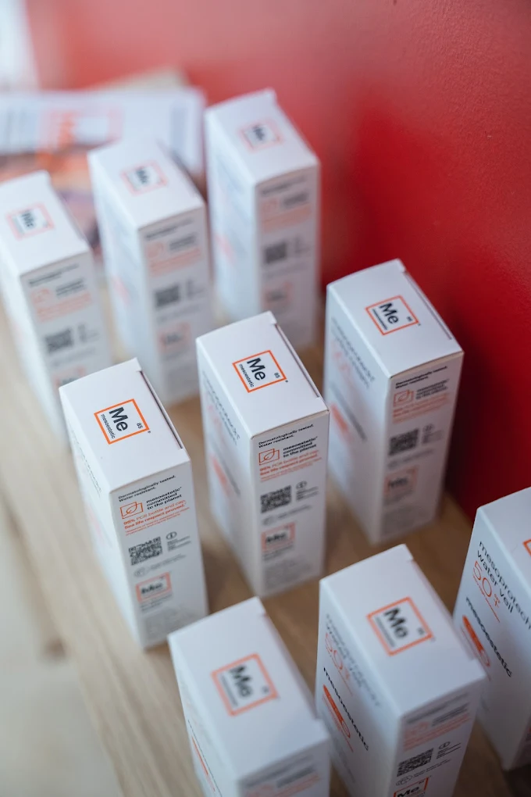
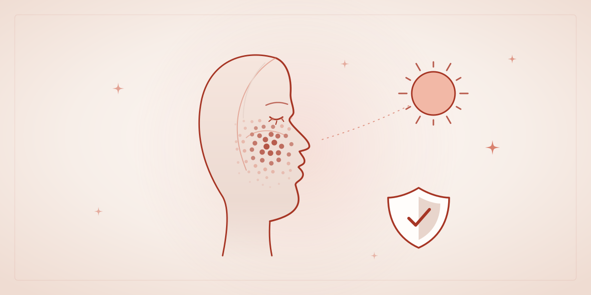
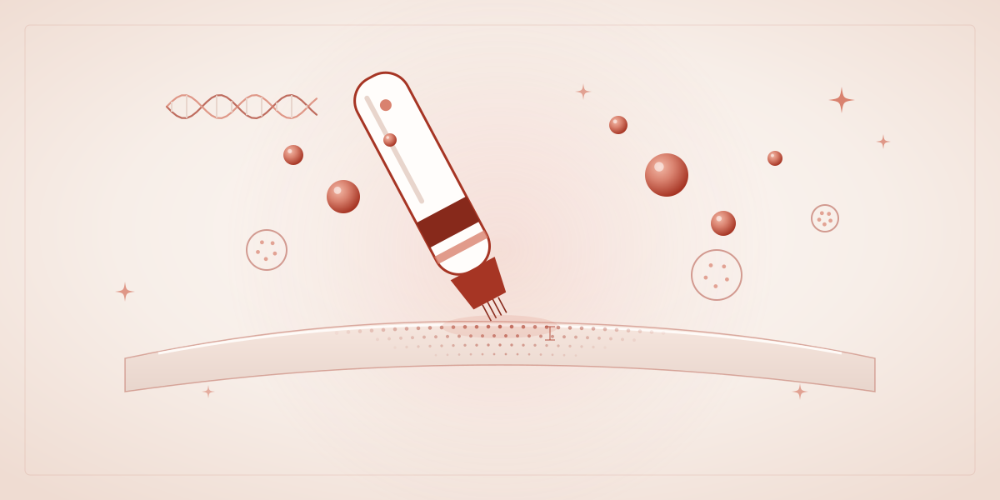

Offrir un soin, c'est offrir du temps. Encore faut-il choisir le bon : détente, peau à soigner, silhouette, ou simple hésitation. Voici comment s'orienter, avec les vrais prix, et comment se procurer une carte cadeau ou un coffret à l'institut.
Carte cadeau ou coffret : ce que propose l'institut
Des cartes cadeaux et des coffrets sont disponibles à l'institut, d'un montant libre ou pour une prestation précise. Les coffrets associent des produits et des soins. Cartes et coffrets sont préparés sur place et remis en main propre.
L'institut propose par ailleurs deux gammes de cosmétiques professionnelles : Mesoestetic pour le visage, LPG pour le corps. Le conseil est personnalisé, jamais imposé.
Une carte cadeau est valable 6 mois. Celle d'un montant libre s'utilise en une ou plusieurs fois, jusqu'à épuisement du montant. Pour le contenu d'un coffret, le mieux est de nous poser la question, par téléphone ou sur place.

Réserver un soin (nouvel onglet)
Pour offrir une vraie pause
Si la personne rêve avant tout d'une pause, pensez aux soins courts et doux. Le modelage du visage, du buste et des épaules dure 30 minutes et coûte 39 €. La séance de LED visage, une lumière froide sans chaleur ni douleur, dure elle aussi 30 minutes, à 35 €. Côté corps, la séance LPG relaxation de 30 minutes est à 60 €.
Ce sont des formats faciles à glisser dans une semaine chargée, et ils conviennent bien à une première visite à l'institut.
Pour prendre soin de sa peau
Teint fatigué, peau qui manque d'éclat ou de confort : les soins du visage LUMINEA sont un bon point de départ. Le LUMINEA Express nettoyage dure 30 minutes, à 45 €. Le LUMINEA Découverte (1h15, 95 €) est un soin complet pour faire connaissance avec sa peau. Le LUMINEA Prestige (1h30, 135 €) y ajoute le LPG visage ou la LED.
Chaque soin du visage commence par un diagnostic de peau. Certaines situations, comme la grossesse, font reporter ou adapter un soin : tout se vérifie lors de ce rendez-vous.
Pour un objectif silhouette
Le LPG corps propose plusieurs protocoles : anti-cellulite (30 minutes, 60 €), jeune maman (30 minutes, 60 €), relaxation (30 minutes, 60 €) ou détox drainant (40 minutes, 70 €). Le LPG n'est pas un traitement amaigrissant : il agit sur l'aspect de la peau, la fermeté et le drainage.
Offrir un soin silhouette demande un peu de tact. Mieux vaut être sûr que la personne en a envie, ou lui laisser le choix avec une carte d'un montant libre.
Pour comparer les soins avant de choisir, consultez nos pages soins du visage à Manosque, LPG endermologie à Manosque et cosmétiques, cartes et coffrets cadeaux.
Vous hésitez ? La carte à montant libre
Quand on connaît mal les envies de la personne, la carte d'un montant libre est la solution la plus sûre : elle choisit elle-même sa prestation.
Si elle ne sait pas par où commencer, le diagnostic visage est un bon premier rendez-vous. Il dure 30 minutes et coûte 20 € : on y fait le point sur la peau, puis on choisit le soin adapté.
Le plus simple pour décider est d'en parler avec nous. Dites-nous pour qui vous offrez et ce que la personne aime, et nous vous aiderons à choisir entre un montant libre et une prestation précise.
Comment se procurer une carte ou un coffret
Passez à l'institut, au 10 Bis avenue Jean Giono à Manosque, à côté de l'opticien ATOL, du lundi au vendredi de 10h à 19h. Vous pouvez aussi appeler le 04 92 87 63 72 pour poser vos questions avant de vous déplacer.
La carte est valable 6 mois à compter de l'achat ; la date limite y figure.
Questions fréquentes
Quelle différence entre une carte cadeau et un coffret ?
La carte porte sur un montant libre ou sur une prestation précise. Les coffrets associent des produits et des soins et sont préparés sur place. Les deux sont disponibles à l'institut.
Comment se procurer une carte cadeau à Manosque ?
Passez à l'institut LUMIA, au 10 Bis avenue Jean Giono, du lundi au vendredi de 10h à 19h, ou appelez le 04 92 87 63 72. La carte est préparée sur place et remise en main propre. Elle est valable 6 mois, et une carte à montant libre s'utilise en une ou plusieurs fois.
Quel soin offrir à quelqu'un dont je connais mal les goûts ?
Une carte d'un montant libre laisse la personne choisir sa prestation. Si elle hésite ensuite, le diagnostic visage de 30 minutes, à 20 €, permet de choisir le soin adapté à sa peau.
À lire aussi

Quel soin du visage choisir selon sa peau ?
Teint terne, taches, rides ou relâchement : quel soin du visage choisir ? LUMINEA, LED, microneedling, COSMELAN ou LPG, notre guide d'orientation à Manosque.

Taches sur le visage : comprendre et atténuer
Mélasma, taches solaires, taches de l'âge : d'où viennent les taches du visage et comment les atténuer durablement, notamment avec le protocole COSMELAN.

Microneedling, exosomes et PDRN : le soin à 0,25 mm
Microneedling à Manosque : stylo médical à 0,25 mm, sans injection, actifs aux exosomes et au PDRN, cure de 6 séances. On vous explique le soin pas à pas.